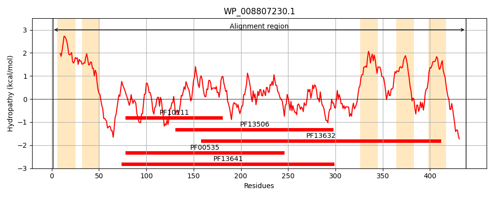
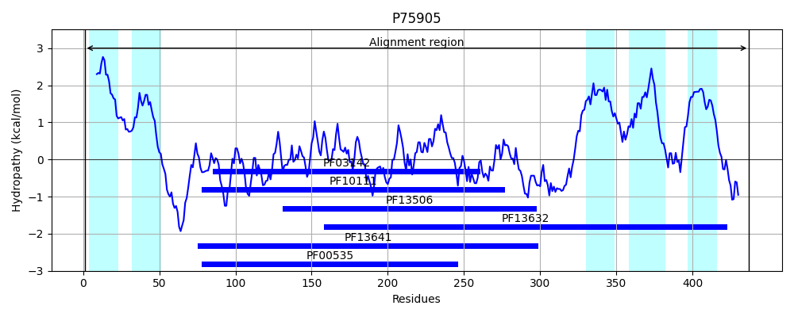
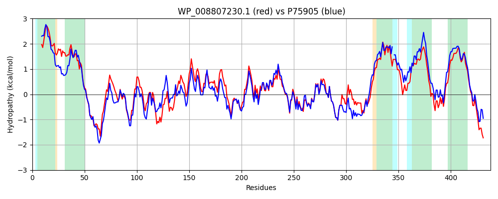

Hit Accession: P75905
Hit TCID: 4.D.1.1.3
Hit Description: gnl|BL_ORD_ID|11424 gnl|TC-DB|P75905|4.D.1.1.3 HYPOTHETICAL 50.8 KDA PROTEIN IN PHOH-CSGG INTERGENIC REGION - Escherichia coli.
Mach Len: 438
e:0.000000
Query TMS Count : 5
Hit TMS Count: 5
TMS-Overlap Score: 4.600000
Predicted Substrates:CHEBI:9823;UDP-N-acetyl-alpha-D-glucosamine, CHEBI:28009;N-acetyl-beta-D-glucosamine
BLAST Alignment:
Score: 1583 , Bit scores: 614 bits, E-value: 0.0e+00, Alignment length: 438, Percentage identity: 66
Query: 1 MTDRIIALCILCLVFGLPLGVAAVFTGELILDFVFFWPLFMSVLWITGGLYFWFQLERHWPWGEDTPPPTLPGNPLISILIPCFNEEKNARETISAALAQRYANLEVIAINDGSSDNTAQVLQQLAQEEPRLRVIHLAANQGKAVALKAGAAAARGDLLVCIDGDALLDRDTAAWLVAPLIHYPHVGAVTGNPRIRTRSTLIGRIQVGEFSSIIGLIKRTQRIYGRVFTVSGVIAAFRRQALADVGYWSPDMITEDIDISWKLQLRHWDIFFEPRALCWILMPETLKGLWKQRLRWAQGGAEVFLVNLRRLFHWEHHRMWPLFLEYACSTLWAFAYAVTILLFILSRLMPLPDNLAVHSLFPPEFTGMLLGVMCLLQFVASLYIERRYEKKVAKSLFWVIWFPMVYWMIGLLTTLVAFPKVMVKRQRSRARWVSPDRG 438
M +RI++ ILCLV +PL VA +GEL++ FVFFWP FMS++WI GG+YFW ERHWPWGE+ P P L NP ISI+IPCFNEEKN ETI AALAQRY N+EVIA+NDGS+D T +L ++A + P LRVIHLA NQGKA+ALK GAAAA+ + LVCIDGDALLDRD AA++V P+++ P VGAVTGNPRIRTRSTL+G+IQVGE+SSIIGLIKRTQRIYG VFTVSGVIAAFRR ALA+VGYWS DMITEDIDISWKLQL W IF+EPRALCWILMPETLKGLWKQRLRWAQGGAEVFL N+ RL+ E+ RMWPLF EY +T+WAF V +++ + +L +P N+ + + G+LL +CLLQF+ SL IE RYE + SLFW+IWFP+++WM+ L TTLV+F +VM+ ++ RARWVSPDRG
Sbjct: 1 MINRIVSFFILCLVLCIPLCVAYFHSGELMMRFVFFWPFFMSIMWIVGGVYFWVYRERHWPWGENAPAPQLKDNPSISIIIPCFNEEKNVEETIHAALAQRYENIEVIAVNDGSTDKTRAILDRMAAQIPHLRVIHLAQNQGKAIALKTGAAAAKSEYLVCIDGDALLDRDAAAYIVEPMLYNPRVGAVTGNPRIRTRSTLVGKIQVGEYSSIIGLIKRTQRIYGNVFTVSGVIAAFRRSALAEVGYWSDDMITEDIDISWKLQLNQWTIFYEPRALCWILMPETLKGLWKQRLRWAQGGAEVFLKNMTRLWRKENFRMWPLFFEYCLTTIWAFTCLVGFIIYAV-QLAGVPLNIELTHIAATHTAGILLCTLCLLQFIVSLMIENRYEHNLTSSLFWIIWFPVIFWMLSLATTLVSFTRVMLMPKKQRARWVSPDRG 437 | Protein Hydropathy Plots: |
|---|
|  |  |
Pairwise Alignment-Hydropathy Plot:
|
|---|
|  |